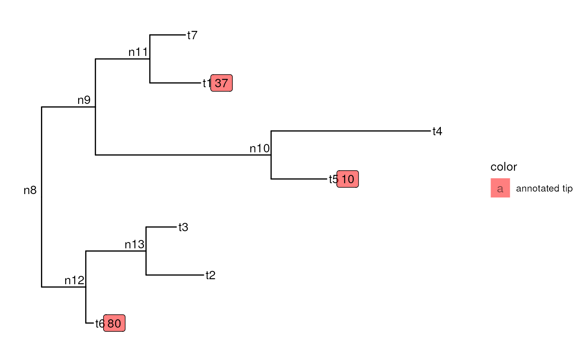
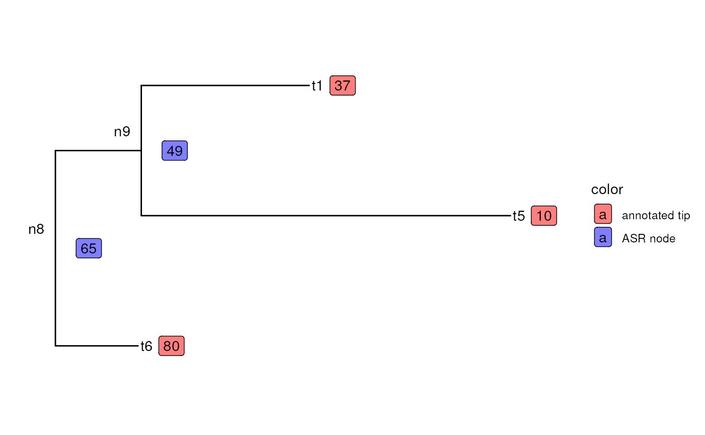
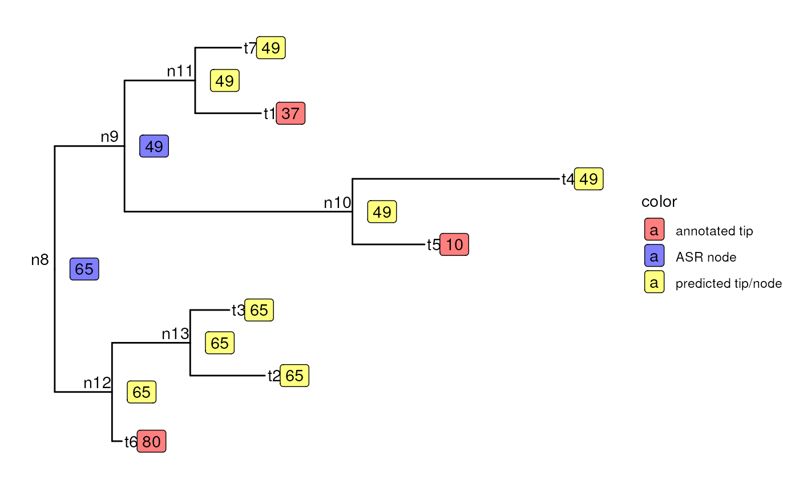

set.seed(1234)
tree <- rtree(n = 7, rooted = TRUE)
tree$node.label <- paste0("n", Ntip(tree) + 1:Nnode(tree))
plot(tree)## Numeric
states <- c(t1 = 37, t2 = NA, t3 = NA, t4 = NA, t5 = 10, t6 = 80, t7 = NA)
states <- states[match(tree$tip.label, names(states))]
tip_data_1 <- data.frame(
label = tree$tip.label,
value = states,
color = "annotated tip"
)
p <- ggtree(tree) %<+% tip_data_1
p +
geom_tiplab() +
geom_nodelab(nudge_x = -0.07, nudge_y = 0.15) +
geom_label(aes(label = value, fill = color), nudge_x = 0.11, na.rm = TRUE, alpha = 0.5) +
scale_fill_manual(values = "red", breaks = "annotated tip")
pruned_states <- states[!is.na(states)]
pruned_tree <- keep.tip(tree, tip = names(pruned_states))
pruned_tip_data <- data.frame(
label = names(pruned_states),
value = pruned_states,
color = "annotated tip"
)
pruned_asr <- asr_squared_change_parsimony(
tree = pruned_tree, tip_states = pruned_states, check_input = FALSE
)$ancestral_states
pruned_node_data <- data.frame(
label = tree$node.label,
value = round(pruned_asr),
color = "ASR node"
)
pruned_tree_data <- rbind(pruned_tip_data, pruned_node_data)
pruned_p <- ggtree(pruned_tree) %<+% pruned_tree_data
pruned_p +
geom_tiplab() +
geom_nodelab(nudge_x = -0.07, nudge_y = 0.15) +
geom_label(aes(label = value, fill = color), nudge_x = 0.11, na.rm = TRUE, alpha = 0.5) +
scale_fill_manual(
values = c("red", "blue"), breaks = c("annotated tip", "ASR node")
)
res <- hsp_squared_change_parsimony(
tree = tree, tip_states = states, check_input = FALSE, weighted = TRUE
)
pred <- res$states
names(pred) <- c(tree$tip.label, tree$node.label)
pred_tree_data <- data.frame(
label = names(pred),
value = floor(pred)
) |>
mutate(
color = case_when(
label %in% names(states[!is.na(states)]) ~ "annotated tip",
label %in% pruned_tree$node.label ~ "ASR node",
TRUE ~ "predicted tip/node"
)
)
p <- ggtree(tree) %<+% pred_tree_data
p +
geom_tiplab() +
geom_nodelab(nudge_x = -0.07, nudge_y = 0.15) +
geom_label(aes(label = value, fill = color), nudge_x = 0.12, alpha = 0.5) +
scale_fill_manual(
values = c("red", "blue", "yellow"), breaks = c("annotated tip", "ASR node", "predicted tip/node")
)

Session info
sessioninfo::session_info()
#> ─ Session info ───────────────────────────────────────────────────────────────
#> setting value
#> version R version 4.4.1 (2024-06-14)
#> os Ubuntu 22.04.4 LTS
#> system x86_64, linux-gnu
#> ui X11
#> language en
#> collate en_US.UTF-8
#> ctype en_US.UTF-8
#> tz Etc/UTC
#> date 2024-07-23
#> pandoc 3.2 @ /usr/bin/ (via rmarkdown)
#>
#> ─ Packages ───────────────────────────────────────────────────────────────────
#> package * version date (UTC) lib source
#> ape * 5.8 2024-04-11 [1] RSPM (R 4.4.0)
#> aplot 0.2.3 2024-06-17 [1] RSPM (R 4.4.0)
#> bslib 0.7.0 2024-03-29 [1] RSPM (R 4.4.0)
#> cachem 1.1.0 2024-05-16 [1] RSPM (R 4.4.0)
#> castor * 1.8.2 2024-06-29 [1] RSPM (R 4.4.0)
#> cli 3.6.3 2024-06-21 [1] RSPM (R 4.4.0)
#> clusterGeneration 1.3.8 2023-08-16 [1] RSPM (R 4.4.0)
#> coda 0.19-4.1 2024-01-31 [1] RSPM (R 4.4.0)
#> codetools 0.2-20 2024-03-31 [2] CRAN (R 4.4.1)
#> colorspace 2.1-0 2023-01-23 [1] RSPM (R 4.4.0)
#> combinat 0.0-8 2012-10-29 [1] RSPM (R 4.4.0)
#> DEoptim 2.2-8 2022-11-11 [1] RSPM (R 4.4.0)
#> desc 1.4.3 2023-12-10 [1] RSPM (R 4.4.0)
#> digest 0.6.36 2024-06-23 [1] RSPM (R 4.4.0)
#> doParallel 1.0.17 2022-02-07 [1] RSPM (R 4.4.0)
#> dplyr * 1.1.4 2023-11-17 [1] RSPM (R 4.4.0)
#> evaluate 0.24.0 2024-06-10 [1] RSPM (R 4.4.0)
#> expm 0.999-9 2024-01-11 [1] RSPM (R 4.4.0)
#> fansi 1.0.6 2023-12-08 [1] RSPM (R 4.4.0)
#> farver 2.1.2 2024-05-13 [1] RSPM (R 4.4.0)
#> fastmap 1.2.0 2024-05-15 [1] RSPM (R 4.4.0)
#> fastmatch 1.1-4 2023-08-18 [1] RSPM (R 4.4.0)
#> foreach 1.5.2 2022-02-02 [1] RSPM (R 4.4.0)
#> fs 1.6.4 2024-04-25 [1] RSPM (R 4.4.0)
#> generics 0.1.3 2022-07-05 [1] RSPM (R 4.4.0)
#> ggfun 0.1.5 2024-05-28 [1] RSPM (R 4.4.0)
#> ggplot2 3.5.1 2024-04-23 [1] RSPM (R 4.4.0)
#> ggplotify 0.1.2 2023-08-09 [1] RSPM (R 4.4.0)
#> ggtree * 3.12.0 2024-04-30 [1] Bioconductor 3.19 (R 4.4.1)
#> glue 1.7.0 2024-01-09 [1] RSPM (R 4.4.0)
#> gridGraphics 0.5-1 2020-12-13 [1] RSPM (R 4.4.0)
#> gtable 0.3.5 2024-04-22 [1] RSPM (R 4.4.0)
#> highr 0.11 2024-05-26 [1] RSPM (R 4.4.0)
#> htmltools 0.5.8.1 2024-04-04 [1] RSPM (R 4.4.0)
#> htmlwidgets 1.6.4 2023-12-06 [1] RSPM (R 4.4.0)
#> igraph 2.0.3 2024-03-13 [1] RSPM (R 4.4.0)
#> iterators 1.0.14 2022-02-05 [1] RSPM (R 4.4.0)
#> jquerylib 0.1.4 2021-04-26 [1] RSPM (R 4.4.0)
#> jsonlite 1.8.8 2023-12-04 [1] RSPM (R 4.4.0)
#> knitr 1.48 2024-07-07 [1] RSPM (R 4.4.0)
#> labeling 0.4.3 2023-08-29 [1] RSPM (R 4.4.0)
#> lattice 0.22-6 2024-03-20 [2] CRAN (R 4.4.1)
#> lazyeval 0.2.2 2019-03-15 [1] RSPM (R 4.4.0)
#> lifecycle 1.0.4 2023-11-07 [1] RSPM (R 4.4.0)
#> magrittr 2.0.3 2022-03-30 [1] RSPM (R 4.4.0)
#> maps * 3.4.2 2023-12-15 [1] RSPM (R 4.4.0)
#> MASS 7.3-61 2024-06-13 [2] RSPM (R 4.4.0)
#> Matrix 1.7-0 2024-04-26 [2] CRAN (R 4.4.1)
#> memoise 2.0.1 2021-11-26 [1] RSPM (R 4.4.0)
#> mnormt 2.1.1 2022-09-26 [1] RSPM (R 4.4.0)
#> munsell 0.5.1 2024-04-01 [1] RSPM (R 4.4.0)
#> naturalsort 0.1.3 2016-08-30 [1] RSPM (R 4.4.0)
#> nlme 3.1-165 2024-06-06 [2] RSPM (R 4.4.0)
#> numDeriv 2016.8-1.1 2019-06-06 [1] RSPM (R 4.4.0)
#> optimParallel 1.0-2 2021-02-11 [1] RSPM (R 4.4.0)
#> patchwork 1.2.0 2024-01-08 [1] RSPM (R 4.4.0)
#> phangorn 2.11.1 2023-01-23 [1] RSPM (R 4.4.0)
#> phytools * 2.3-0 2024-06-13 [1] RSPM (R 4.4.0)
#> pillar 1.9.0 2023-03-22 [1] RSPM (R 4.4.0)
#> pkgconfig 2.0.3 2019-09-22 [1] RSPM (R 4.4.0)
#> pkgdown 2.1.0 2024-07-06 [1] RSPM (R 4.4.0)
#> purrr 1.0.2 2023-08-10 [1] RSPM (R 4.4.0)
#> quadprog 1.5-8 2019-11-20 [1] RSPM (R 4.4.0)
#> R6 2.5.1 2021-08-19 [1] RSPM (R 4.4.0)
#> ragg 1.3.2 2024-05-15 [1] RSPM (R 4.4.0)
#> Rcpp * 1.0.13 2024-07-17 [1] RSPM (R 4.4.0)
#> rlang 1.1.4 2024-06-04 [1] RSPM (R 4.4.0)
#> rmarkdown 2.27 2024-05-17 [1] RSPM (R 4.4.0)
#> RSpectra 0.16-2 2024-07-18 [1] RSPM (R 4.4.0)
#> sass 0.4.9 2024-03-15 [1] RSPM (R 4.4.0)
#> scales 1.3.0 2023-11-28 [1] RSPM (R 4.4.0)
#> scatterplot3d 0.3-44 2023-05-05 [1] RSPM (R 4.4.0)
#> sessioninfo 1.2.2 2021-12-06 [1] RSPM (R 4.4.0)
#> systemfonts 1.1.0 2024-05-15 [1] RSPM (R 4.4.0)
#> taxPPro * 1.0.0 2024-07-23 [1] local
#> textshaping 0.4.0 2024-05-24 [1] RSPM (R 4.4.0)
#> tibble 3.2.1 2023-03-20 [1] RSPM (R 4.4.0)
#> tidyr 1.3.1 2024-01-24 [1] RSPM (R 4.4.0)
#> tidyselect 1.2.1 2024-03-11 [1] RSPM (R 4.4.0)
#> tidytree 0.4.6 2023-12-12 [1] RSPM (R 4.4.0)
#> treeio 1.28.0 2024-04-30 [1] Bioconductor 3.19 (R 4.4.1)
#> utf8 1.2.4 2023-10-22 [1] RSPM (R 4.4.0)
#> vctrs 0.6.5 2023-12-01 [1] RSPM (R 4.4.0)
#> withr 3.0.0 2024-01-16 [1] RSPM (R 4.4.0)
#> xfun 0.46 2024-07-18 [1] RSPM (R 4.4.0)
#> yaml 2.3.9 2024-07-05 [1] RSPM (R 4.4.0)
#> yulab.utils 0.1.4 2024-01-28 [1] RSPM (R 4.4.0)
#>
#> [1] /usr/local/lib/R/site-library
#> [2] /usr/local/lib/R/library
#>
#> ──────────────────────────────────────────────────────────────────────────────